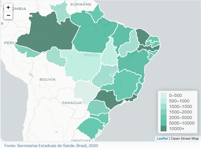

A melhor forma de saber se você foi infectado pelo novo Coronavírus é realizar uma avaliação médica. Para auxiliar no diagnóstico, existem alguns exames que são realizados em laboratórios de confiança, hospitais ou na rede pública de saúde.
Os pacientes mais suscetíveis às complicações do novo Coronavírus, são idosos acima de 60 anos, grávidas e pessoas que possuem doenças crônicas como diabetes, asma e hipertensão.
De acordo com o Ministério da Saúde até o dia 13 de maio de 2020 foram resgistrados 188.974 casos confirmatos de Covid-19 e 13.149 óbitos.
